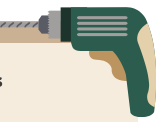
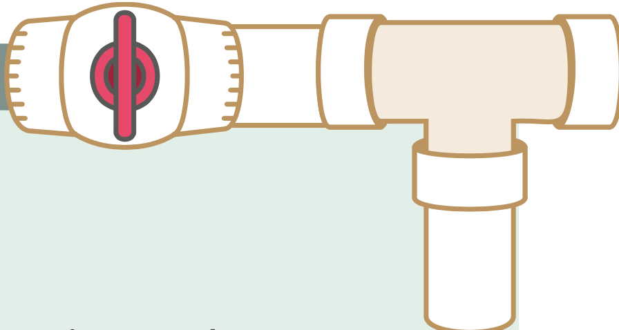

¿Cómo hacer un sistema de captación de agua de lluvia (SCALL) en mi escuela?
Contents
4. ¿Cómo dimensionar y construir un SCALL?
4.2. ¿En qué consiste el sistema de recolec- ción y conducción de agua?
4.2.3. ¿Qué materiales y herramientas se necesitan para la instalación?
Herramientas sugeridas

- Coffee
- Tea
- Milk
- Taladro
- Broca para concreto de 1⁄4”
- Broca para metal de 1⁄4”
- Arco con segueta
- Marro
- Desarmador plano
- Desarmador de cruz
- Flexómetro
- Cizalla
- Escalera de tijera
- Guantes de carnaza
- Lentes de seguridad
|
Materiales:

- Canaleta metálica del diámetro y forma seleccionados
- Soportes para canaleta (abrazaderas), también del diámetro seleccionado
- Tubo de PVC del diámetro de las bajadas de agua; la longitud de este dependerá de la trayectoria hacia donde se ubicarán los demás componentes
- Campana de ampliación/reducción del diámetro de las bajadas a un diámetro mayor
- Codos y tees de PVC según la trayectoria a recorrer
- Soportes para fijar el tubo de PVC según la trayectoria
- Pijas
- Taquetes
- Pegamento de PVC
- Lija
- Cinta de aislar o cinta teflón
|